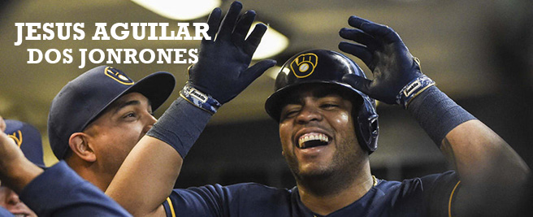
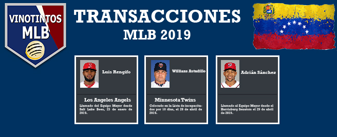
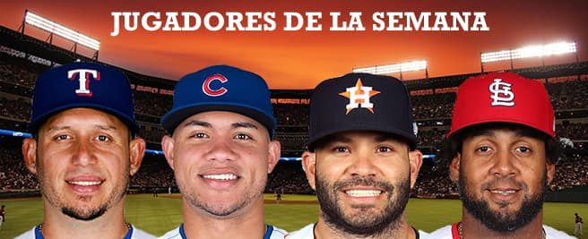
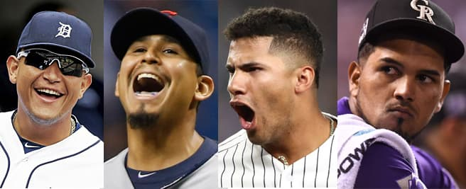
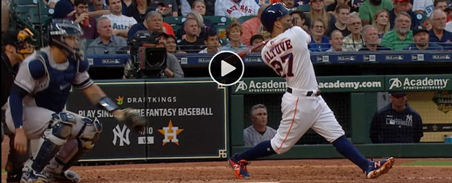
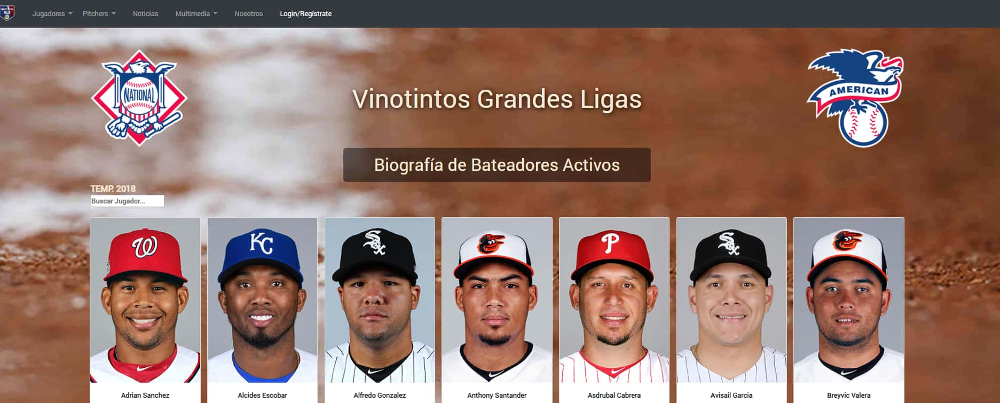
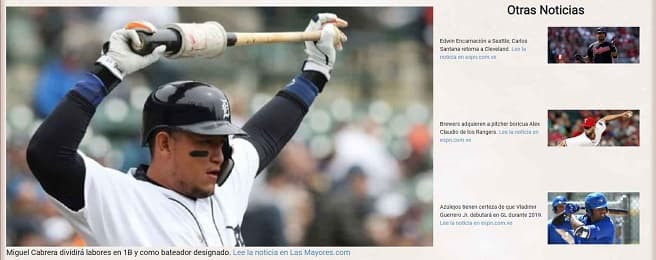
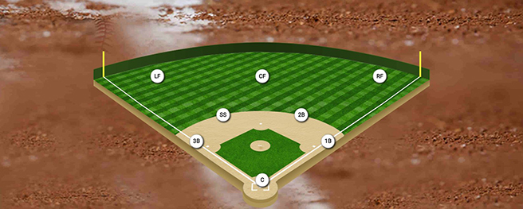

<div class="container-home">
  <div class="container_elements_home">
    <!-- <div class="element-box1"> -->

      <div class="box_home-element1">
        <a routerLink="news"></a>
        <p class="text-box">El venezolano Aguilar brilla en ausencia de Yelich y ganan Cerveceros. <a routerLink="news" class="ver-mas"> Ver más
          </a>
      </div>

      <div class="box_home-element2">
          <a routerLink="transacciones"></a>
          <p class="text-box">Puedes verificar diariamente que ocurre con tus ídolos y las Transacciones de MLB.<a routerLink="transacciones" class="ver-mas"> Ver más
            </a>
      </div>
      <div class="box_home-element11">
        <a routerLink="videos"></a>
        <p class="text-box">Gleyber Torres bateó un Jonrón impulsor de dos carreras en el Juego contra San Francisco.<a routerLink="videos" class="ver-mas"> Ver más
          </a>
    </div>

      <div class="box_home-element22">
          <a routerLink="playeroftheweek"></a>
          <p class="text-box">Cada semana se analiza el rendimiento de todos los jugadores venezolanos en la MLB y se presenta el que  de acuerdo
            a determinados parámetros logró destacarse.<a routerLink="playeroftheweek" class="ver-mas"> Ver más
            </a>
      </div>
      <div class="box_home-element3">
          <a routerLink="news"></a>
          <p class="text-box">¿Hasta cuándo llamaremos “Cafecito” a José Martínez?, Con Treinta (30) años de edad, ya en su
            cuarto año en las Grandes Ligas...<a routerLink="news" class="ver-mas"> Ver más
            </a>
      </div>

      <div class="box_home-element4">
          <a routerLink="news_ppal"></a>
          <p class="text-box">Actuación diaria de los venezolanos en MLB. Puedes ver las estadisticas
            diarias, conocer en que equipo están, etc.<a routerLink="news_ppal" class="ver-mas"> Ver más
            </a>
      </div>
      <div class="box_home-element5">
          <a routerLink="videos"></a>
          <p class="text-box">José Altuve bateó un jonrón inmenso contra los Yankees, de acuerdo a Statcast fue de 448 pies, el décimo más largo
              de esta temprana temporada<a routerLink="videos" class="ver-mas"> Ver más
            </a>
      </div>

      <div class="box_home-element6">
          <a routerLink="lideres"></a>
          <p class="text-box">Seción para conocer cada uno de los líderes vinotintosmlb por área ofensiva: Average, Hits, Jonrones, Dobles, Triples y Bases Robadas<a routerLink="lideres" class="ver-mas">
              Ver más </a> </p>
      </div>

      <div class="box_home-element7">
        <a routerLink="bioActives"></a>
        <p class="text-box">Biografía y Datos de los Vinotintos MLB. Puedes conocer más detalles de cada uno de los
          jugadores venezolanos activos. <a routerLink="bioActives" class="ver-mas">
            Ver más </a> </p>
      </div>


      <div class="box_home-element8">
        <a routerLink="news"></a>
        <p class="text-box">Las noticias más actuales. Mantente al día con los acontecimientros relevantes de todos
          los VinotintosMLB. <a routerLink="news" class="ver-mas">
            Ver más </a> </p>
      </div>
      <div class="box_home-element9">
          <a routerLink="infog_Show"></a>
          <p class="text-box">Infografías, disfruta de los datos relevantes de la MLB y los Vinotintos de una forma
            práctica.<a routerLink="infog_Show" class="ver-mas">
              Ver más </a> </p>
      </div>
      <div class="box_home-element10">
        <a routerLink="position"></a>
        <p class="text-box">Puedes conocer cuantos y cuales vinotintosmlb juegan el Grandes Ligas por posición defensiva: Segunda Base, Jardín Izquierdo, Catcher, etc. <a routerLink="position" class="ver-mas">
            Ver más </a> </p>
      </div>

    <!-- </div> -->
  </div>
</div>

